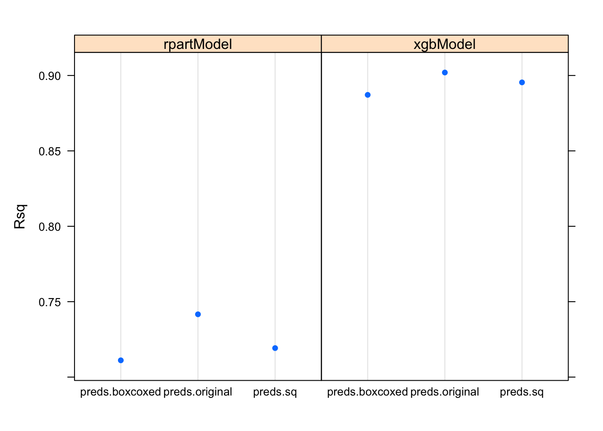
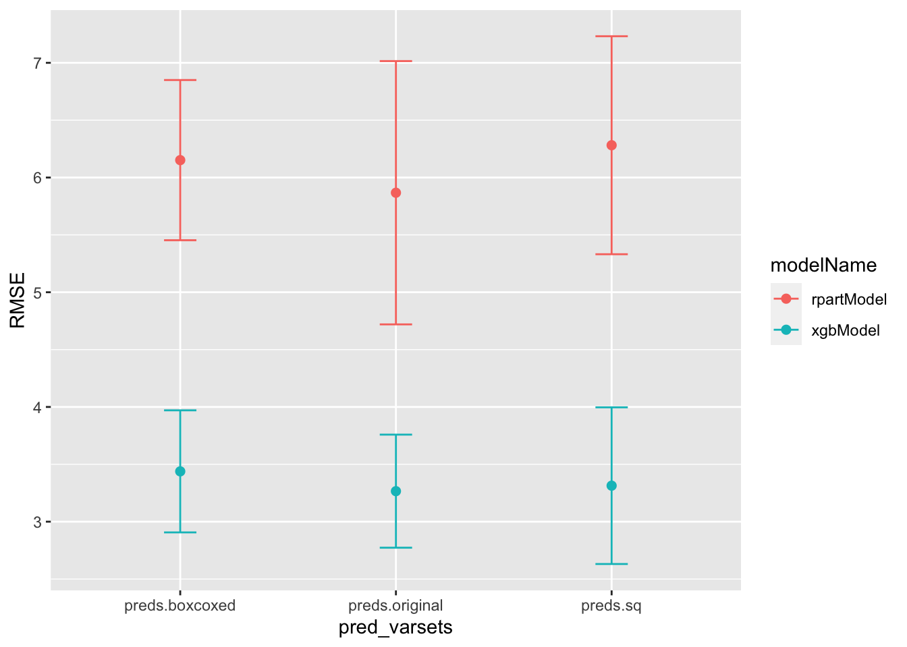
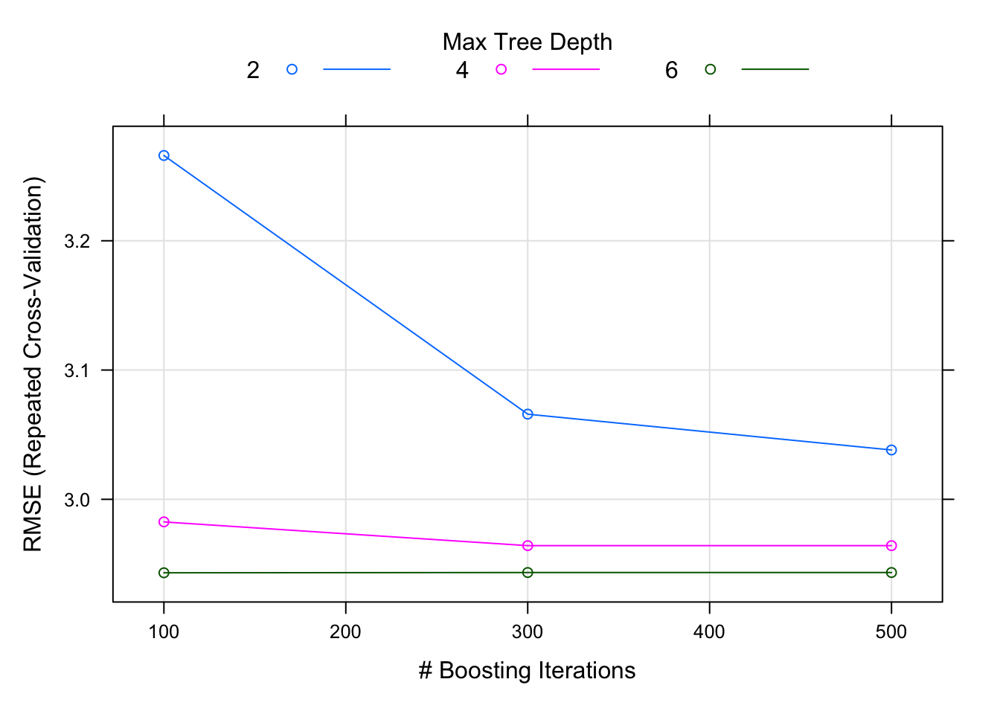

library(tidyr)
library(tibble)
library(dplyr)
library(magrittr)
library(purrr)
library(caret)
library(mlbench)
library(xgboost)
data("BostonHousing")Pur(r)ify Your Carets
Programming Practices
You’ll learn how to use
purrr, caret and list-cols to quickly create hundreds of dataset + model combinations, store data & model objects neatly in one tibble, and post process programatically. These tools enable succinct functional programming in which a lot gets done with just a few lines of code.
The motivation
I want to write a quick blogpost on two phenomenal pieces of code written by Kuhn et al, and Wickham et al, namely - purrr, caret. These play so well with the tidyverse that they have become an indispensible part of my repertoire.
In any datascience project, I want to investigate the effect of various combinations of:
- Variable transformations
- Variable selection
- Grouped vs ungrouped categorical variables
- Models of different types
- Different hyperparameter tuning methods
For each of the various combinations possible, I want to quantify model performance using common performance metrics like AIC or SBC. Commonly, I’ll select the model that has the ‘best’ possible performance among all such models.
Traditionally, I end up with many R objects: one for each new combination of transformation-model_type-tuning_method. For example, boostFit, xgbFit, glmFit, elastinetFit for untransformed variables. If I have any transformations, I might also have boostFit.xform, xgbFit.xform, glmFit.xform etc. Add to that, investigation of grouped vs ungrouped variables… boostFit.xform.grouped, xgbFit.xform.ungrouped etc. You get the idea.
The challenge with this approach is that the data and the models remain separated, there’s a lot of repeat code for object management, manipulation and plotting, and in order to compare all the models together, we have to somehow stitch the results together. (For the last point, resamples() in caret works beautifully, but requires the same number of resamples in each model.)
The approach I’m presenting below is a combination of a few approaches I learnt through the APM book, the caret documentation, grammar and verbage in tidyverse, as well as a couple of useful talks in the 2017 R Studio conferenence in Orlando [Notably ones on purrr and list-cols]. What you’ll also see is that the code is extremely succint, which is simply a joy to write and read.
An example using BostonHousing data
Load libs & data
The libraries I’m using here are tidyr, tibble, dplyr, magrittr, purrr, and caret. The dataset is from mlbench.
Transformations on Xs
For the purposes of this demonstration, I’ll simply create two new sets variables using a Box-Cox transformation - caret’s preProcess() makes this easy - and the squared values of the originals. Save each new variable-set in a new character vector which follows the naming convention preds.xxxx.1
# The originals
response <- 'medv'
preds.original <- colnames(BostonHousing[,1:13])
# Box-Cox transformation
prepTrain <- preProcess(x = BostonHousing[,preds.original], method = c('BoxCox'))
boxcoxed <- predict(prepTrain,newdata = BostonHousing[,preds.original])
colnames(boxcoxed) <- paste0(colnames(boxcoxed),'.boxed')
preds.boxcoxed <- colnames(boxcoxed)
# Squaring
squared <- (BostonHousing[,c(1:3,5:13)])^2
colnames(squared) <- paste0(colnames(squared),'.sq')
preds.sq <- colnames(squared)
# All together now...
BostonHousing %<>%
cbind(boxcoxed,squared)
# Make sure everything is a numerical (for xgboost to work), and also NOT a tibble (some caret functions have trouble with tibbles)
BostonHousing %<>%
map_df(.f = ~as.numeric(.x)) %>% as.data.frame()
str(BostonHousing)'data.frame': 506 obs. of 39 variables:
$ crim : num 0.00632 0.02731 0.02729 0.03237 0.06905 ...
$ zn : num 18 0 0 0 0 0 12.5 12.5 12.5 12.5 ...
$ indus : num 2.31 7.07 7.07 2.18 2.18 2.18 7.87 7.87 7.87 7.87 ...
$ chas : num 1 1 1 1 1 1 1 1 1 1 ...
$ nox : num 0.538 0.469 0.469 0.458 0.458 0.458 0.524 0.524 0.524 0.524 ...
$ rm : num 6.58 6.42 7.18 7 7.15 ...
$ age : num 65.2 78.9 61.1 45.8 54.2 58.7 66.6 96.1 100 85.9 ...
$ dis : num 4.09 4.97 4.97 6.06 6.06 ...
$ rad : num 1 2 2 3 3 3 5 5 5 5 ...
$ tax : num 296 242 242 222 222 222 311 311 311 311 ...
$ ptratio : num 15.3 17.8 17.8 18.7 18.7 18.7 15.2 15.2 15.2 15.2 ...
$ b : num 397 397 393 395 397 ...
$ lstat : num 4.98 9.14 4.03 2.94 5.33 ...
$ medv : num 24 21.6 34.7 33.4 36.2 28.7 22.9 27.1 16.5 18.9 ...
$ crim.boxed : num -5.06 -3.6 -3.6 -3.43 -2.67 ...
$ zn.boxed : num 18 0 0 0 0 0 12.5 12.5 12.5 12.5 ...
$ indus.boxed : num 0.994 2.966 2.966 0.914 0.914 ...
$ chas.boxed : num 1 1 1 1 1 1 1 1 1 1 ...
$ nox.boxed : num -0.83 -1.09 -1.09 -1.13 -1.13 ...
$ rm.boxed : num 2.81 2.76 3 2.94 2.99 ...
$ age.boxed : num 175 224 161 110 137 ...
$ dis.boxed : num 1.41 1.6 1.6 1.8 1.8 ...
$ rad.boxed : num 0 0.693 0.693 1.099 1.099 ...
$ tax.boxed : num 1.88 1.87 1.87 1.87 1.87 ...
$ ptratio.boxed: num 117 158 158 174 174 ...
$ b.boxed : num 78764 78764 77157 77866 78764 ...
$ lstat.boxed : num 1.89 2.78 1.61 1.2 1.99 ...
$ crim.sq : num 3.99e-05 7.46e-04 7.45e-04 1.05e-03 4.77e-03 ...
$ zn.sq : num 324 0 0 0 0 ...
$ indus.sq : num 5.34 49.98 49.98 4.75 4.75 ...
$ nox.sq : num 0.289 0.22 0.22 0.21 0.21 ...
$ rm.sq : num 43.2 41.2 51.6 49 51.1 ...
$ age.sq : num 4251 6225 3733 2098 2938 ...
$ dis.sq : num 16.7 24.7 24.7 36.8 36.8 ...
$ rad.sq : num 1 4 4 9 9 9 25 25 25 25 ...
$ tax.sq : num 87616 58564 58564 49284 49284 ...
$ ptratio.sq : num 234 317 317 350 350 ...
$ b.sq : num 157530 157530 154315 155733 157530 ...
$ lstat.sq : num 24.8 83.54 16.24 8.64 28.41 ...Here’s our new predictor variable sets:
pred_varsets <- ls(pattern = 'preds')
pred_varsets[1] "preds.boxcoxed" "preds.original" "preds.sq" Create a starter dataframe
I first create a starter dataframe where the input data is repeated as many times as the number of predictor variable sets. enframe() allows us to embed objects a dataframe column.
num_var_select <- length(pred_varsets)
list(BostonHousing) %>%
rep(num_var_select) %>%
enframe(name = 'id', value = 'rawdata') %>%
mutate(pred_varsets = pred_varsets) -> starter_df
starter_df# A tibble: 3 × 3
id rawdata pred_varsets
<int> <list> <chr>
1 1 <df [506 × 39]> preds.boxcoxed
2 2 <df [506 × 39]> preds.original
3 3 <df [506 × 39]> preds.sq Now, I split the raw data into train.X column which houses data only for those predictor variables identified in the pred_varsets column. map2 is a great function which allows a mapping to be done over two variables and passed to a function.
I also create a train.Y for the response variable here.
# Function to select columns in the raw data
filterColumns <- function(x,y){
x[,(colnames(x) %in% eval(parse(text=y)))]
}
# Create X and Y columns
starter_df %<>%
transmute(
id,
pred_varsets,
train.X = map2(rawdata, pred_varsets, ~ filterColumns(.x, .y)),
train.Y = map(rawdata, ~ .x$medv)
)
starter_df# A tibble: 3 × 4
id pred_varsets train.X train.Y
<int> <chr> <list> <list>
1 1 preds.boxcoxed <df [506 × 13]> <dbl [506]>
2 2 preds.original <df [506 × 13]> <dbl [506]>
3 3 preds.sq <df [506 × 12]> <dbl [506]>Select the models
This is where I can select which models I want in the analysis. Each model should be in a function of this style:
modelName <- function(X, Y){
ctrl <- trainControl(
...
)
train(
x = X,
y = Y,
trContrl = ctrl,
method = '## modelname ##',
...
)
}I’m using caret exclusively, so each function needs a trainControl() and a train(). Learn more about caret here.
rpartModel <- function(X, Y) {
ctrl <- trainControl(
## 5-fold CV
method = "repeatedcv",
number = 5
)
train(
x = X,
y = Y,
method = 'rpart2',
trControl = ctrl,
tuneGrid = data.frame(maxdepth=c(2,3,4,5)),
preProc = c('center', 'scale')
)
}
xgbTreeModel <- function(X,Y){
ctrl <- trainControl(
## 5-fold CV
method = "repeatedcv",
number = 5
)
train(
x=X,
y=Y,
method = 'xgbTree',
trControl = ctrl,
tuneGrid = expand.grid(nrounds = c(100,300,500),
max_depth = c(2,4,6) ,
eta = 0.1,
gamma = 1,
colsample_bytree = 1,
min_child_weight = 1,
subsample = 1),
preProc = c('center', 'scale')
)
}Once these functions are setup, enframe these into a dataframe.
model_list <- list(rpartModel=rpartModel,
xgbModel=xgbTreeModel) %>%
enframe(name = 'modelName',value = 'model')
model_list# A tibble: 2 × 2
modelName model
<chr> <list>
1 rpartModel <fn>
2 xgbModel <fn> Create data-model combinations
Now, we’re ready to combine the two together. train_df has all the predictor varset combinations, model_list has the list of all models. I’m assuming I want to run each combination of the two; so if I have 3 variable sets, and 2 models, I have a total of 6 models to run. This code sets that up:
train_df <-
starter_df[rep(1:nrow(starter_df),nrow(model_list)),]
train_df %<>%
bind_cols(
model_list[rep(1:nrow(model_list),nrow(starter_df)),] %>% arrange(modelName)
) %>%
mutate(id=1:nrow(.))
train_df# A tibble: 6 × 6
id pred_varsets train.X train.Y modelName model
<int> <chr> <list> <list> <chr> <list>
1 1 preds.boxcoxed <df [506 × 13]> <dbl [506]> rpartModel <fn>
2 2 preds.original <df [506 × 13]> <dbl [506]> rpartModel <fn>
3 3 preds.sq <df [506 × 12]> <dbl [506]> rpartModel <fn>
4 4 preds.boxcoxed <df [506 × 13]> <dbl [506]> xgbModel <fn>
5 5 preds.original <df [506 × 13]> <dbl [506]> xgbModel <fn>
6 6 preds.sq <df [506 × 12]> <dbl [506]> xgbModel <fn> Solve the models
The data is almost all setup now. invoke_map() is a function which can call functions and pass it arguments. Since we need to pass both train.X and train.Y together, there’s an intermediate call to map2() to “listify” these first into params.
All them models solve, and their results (the model object itself) is stored in modelFits.
train_df %<>%
mutate(params = map2(train.X, train.Y, ~ list(X = .x, Y = .y)),
modelFits=invoke_map(model,params)
)[21:00:12] WARNING: amalgamation/../src/c_api/c_api.cc:785: `ntree_limit` is deprecated, use `iteration_range` instead.
[21:00:12] WARNING: amalgamation/../src/c_api/c_api.cc:785: `ntree_limit` is deprecated, use `iteration_range` instead.
[21:00:12] WARNING: amalgamation/../src/c_api/c_api.cc:785: `ntree_limit` is deprecated, use `iteration_range` instead.
[21:00:12] WARNING: amalgamation/../src/c_api/c_api.cc:785: `ntree_limit` is deprecated, use `iteration_range` instead.
[21:00:12] WARNING: amalgamation/../src/c_api/c_api.cc:785: `ntree_limit` is deprecated, use `iteration_range` instead.
[21:00:12] WARNING: amalgamation/../src/c_api/c_api.cc:785: `ntree_limit` is deprecated, use `iteration_range` instead.
[21:00:13] WARNING: amalgamation/../src/c_api/c_api.cc:785: `ntree_limit` is deprecated, use `iteration_range` instead.
[21:00:13] WARNING: amalgamation/../src/c_api/c_api.cc:785: `ntree_limit` is deprecated, use `iteration_range` instead.
[21:00:13] WARNING: amalgamation/../src/c_api/c_api.cc:785: `ntree_limit` is deprecated, use `iteration_range` instead.
[21:00:13] WARNING: amalgamation/../src/c_api/c_api.cc:785: `ntree_limit` is deprecated, use `iteration_range` instead.
[21:00:13] WARNING: amalgamation/../src/c_api/c_api.cc:785: `ntree_limit` is deprecated, use `iteration_range` instead.
[21:00:13] WARNING: amalgamation/../src/c_api/c_api.cc:785: `ntree_limit` is deprecated, use `iteration_range` instead.
[21:00:13] WARNING: amalgamation/../src/c_api/c_api.cc:785: `ntree_limit` is deprecated, use `iteration_range` instead.
[21:00:13] WARNING: amalgamation/../src/c_api/c_api.cc:785: `ntree_limit` is deprecated, use `iteration_range` instead.
[21:00:14] WARNING: amalgamation/../src/c_api/c_api.cc:785: `ntree_limit` is deprecated, use `iteration_range` instead.
[21:00:14] WARNING: amalgamation/../src/c_api/c_api.cc:785: `ntree_limit` is deprecated, use `iteration_range` instead.
[21:00:14] WARNING: amalgamation/../src/c_api/c_api.cc:785: `ntree_limit` is deprecated, use `iteration_range` instead.
[21:00:14] WARNING: amalgamation/../src/c_api/c_api.cc:785: `ntree_limit` is deprecated, use `iteration_range` instead.
[21:00:14] WARNING: amalgamation/../src/c_api/c_api.cc:785: `ntree_limit` is deprecated, use `iteration_range` instead.
[21:00:14] WARNING: amalgamation/../src/c_api/c_api.cc:785: `ntree_limit` is deprecated, use `iteration_range` instead.
[21:00:14] WARNING: amalgamation/../src/c_api/c_api.cc:785: `ntree_limit` is deprecated, use `iteration_range` instead.
[21:00:14] WARNING: amalgamation/../src/c_api/c_api.cc:785: `ntree_limit` is deprecated, use `iteration_range` instead.
[21:00:15] WARNING: amalgamation/../src/c_api/c_api.cc:785: `ntree_limit` is deprecated, use `iteration_range` instead.
[21:00:15] WARNING: amalgamation/../src/c_api/c_api.cc:785: `ntree_limit` is deprecated, use `iteration_range` instead.
[21:00:15] WARNING: amalgamation/../src/c_api/c_api.cc:785: `ntree_limit` is deprecated, use `iteration_range` instead.
[21:00:15] WARNING: amalgamation/../src/c_api/c_api.cc:785: `ntree_limit` is deprecated, use `iteration_range` instead.
[21:00:15] WARNING: amalgamation/../src/c_api/c_api.cc:785: `ntree_limit` is deprecated, use `iteration_range` instead.
[21:00:15] WARNING: amalgamation/../src/c_api/c_api.cc:785: `ntree_limit` is deprecated, use `iteration_range` instead.
[21:00:15] WARNING: amalgamation/../src/c_api/c_api.cc:785: `ntree_limit` is deprecated, use `iteration_range` instead.
[21:00:15] WARNING: amalgamation/../src/c_api/c_api.cc:785: `ntree_limit` is deprecated, use `iteration_range` instead.
[21:00:16] WARNING: amalgamation/../src/c_api/c_api.cc:785: `ntree_limit` is deprecated, use `iteration_range` instead.
[21:00:16] WARNING: amalgamation/../src/c_api/c_api.cc:785: `ntree_limit` is deprecated, use `iteration_range` instead.
[21:00:16] WARNING: amalgamation/../src/c_api/c_api.cc:785: `ntree_limit` is deprecated, use `iteration_range` instead.
[21:00:16] WARNING: amalgamation/../src/c_api/c_api.cc:785: `ntree_limit` is deprecated, use `iteration_range` instead.
[21:00:16] WARNING: amalgamation/../src/c_api/c_api.cc:785: `ntree_limit` is deprecated, use `iteration_range` instead.
[21:00:16] WARNING: amalgamation/../src/c_api/c_api.cc:785: `ntree_limit` is deprecated, use `iteration_range` instead.
[21:00:17] WARNING: amalgamation/../src/c_api/c_api.cc:785: `ntree_limit` is deprecated, use `iteration_range` instead.
[21:00:17] WARNING: amalgamation/../src/c_api/c_api.cc:785: `ntree_limit` is deprecated, use `iteration_range` instead.
[21:00:17] WARNING: amalgamation/../src/c_api/c_api.cc:785: `ntree_limit` is deprecated, use `iteration_range` instead.
[21:00:17] WARNING: amalgamation/../src/c_api/c_api.cc:785: `ntree_limit` is deprecated, use `iteration_range` instead.
[21:00:17] WARNING: amalgamation/../src/c_api/c_api.cc:785: `ntree_limit` is deprecated, use `iteration_range` instead.
[21:00:17] WARNING: amalgamation/../src/c_api/c_api.cc:785: `ntree_limit` is deprecated, use `iteration_range` instead.
[21:00:17] WARNING: amalgamation/../src/c_api/c_api.cc:785: `ntree_limit` is deprecated, use `iteration_range` instead.
[21:00:17] WARNING: amalgamation/../src/c_api/c_api.cc:785: `ntree_limit` is deprecated, use `iteration_range` instead.
[21:00:17] WARNING: amalgamation/../src/c_api/c_api.cc:785: `ntree_limit` is deprecated, use `iteration_range` instead.
[21:00:17] WARNING: amalgamation/../src/c_api/c_api.cc:785: `ntree_limit` is deprecated, use `iteration_range` instead.
[21:00:18] WARNING: amalgamation/../src/c_api/c_api.cc:785: `ntree_limit` is deprecated, use `iteration_range` instead.
[21:00:18] WARNING: amalgamation/../src/c_api/c_api.cc:785: `ntree_limit` is deprecated, use `iteration_range` instead.
[21:00:18] WARNING: amalgamation/../src/c_api/c_api.cc:785: `ntree_limit` is deprecated, use `iteration_range` instead.
[21:00:18] WARNING: amalgamation/../src/c_api/c_api.cc:785: `ntree_limit` is deprecated, use `iteration_range` instead.
[21:00:18] WARNING: amalgamation/../src/c_api/c_api.cc:785: `ntree_limit` is deprecated, use `iteration_range` instead.
[21:00:18] WARNING: amalgamation/../src/c_api/c_api.cc:785: `ntree_limit` is deprecated, use `iteration_range` instead.
[21:00:19] WARNING: amalgamation/../src/c_api/c_api.cc:785: `ntree_limit` is deprecated, use `iteration_range` instead.
[21:00:19] WARNING: amalgamation/../src/c_api/c_api.cc:785: `ntree_limit` is deprecated, use `iteration_range` instead.
[21:00:19] WARNING: amalgamation/../src/c_api/c_api.cc:785: `ntree_limit` is deprecated, use `iteration_range` instead.
[21:00:19] WARNING: amalgamation/../src/c_api/c_api.cc:785: `ntree_limit` is deprecated, use `iteration_range` instead.
[21:00:19] WARNING: amalgamation/../src/c_api/c_api.cc:785: `ntree_limit` is deprecated, use `iteration_range` instead.
[21:00:19] WARNING: amalgamation/../src/c_api/c_api.cc:785: `ntree_limit` is deprecated, use `iteration_range` instead.
[21:00:20] WARNING: amalgamation/../src/c_api/c_api.cc:785: `ntree_limit` is deprecated, use `iteration_range` instead.
[21:00:20] WARNING: amalgamation/../src/c_api/c_api.cc:785: `ntree_limit` is deprecated, use `iteration_range` instead.
[21:00:20] WARNING: amalgamation/../src/c_api/c_api.cc:785: `ntree_limit` is deprecated, use `iteration_range` instead.
[21:00:20] WARNING: amalgamation/../src/c_api/c_api.cc:785: `ntree_limit` is deprecated, use `iteration_range` instead.
[21:00:20] WARNING: amalgamation/../src/c_api/c_api.cc:785: `ntree_limit` is deprecated, use `iteration_range` instead.
[21:00:20] WARNING: amalgamation/../src/c_api/c_api.cc:785: `ntree_limit` is deprecated, use `iteration_range` instead.
[21:00:21] WARNING: amalgamation/../src/c_api/c_api.cc:785: `ntree_limit` is deprecated, use `iteration_range` instead.
[21:00:21] WARNING: amalgamation/../src/c_api/c_api.cc:785: `ntree_limit` is deprecated, use `iteration_range` instead.
[21:00:21] WARNING: amalgamation/../src/c_api/c_api.cc:785: `ntree_limit` is deprecated, use `iteration_range` instead.
[21:00:21] WARNING: amalgamation/../src/c_api/c_api.cc:785: `ntree_limit` is deprecated, use `iteration_range` instead.
[21:00:21] WARNING: amalgamation/../src/c_api/c_api.cc:785: `ntree_limit` is deprecated, use `iteration_range` instead.
[21:00:21] WARNING: amalgamation/../src/c_api/c_api.cc:785: `ntree_limit` is deprecated, use `iteration_range` instead.
[21:00:21] WARNING: amalgamation/../src/c_api/c_api.cc:785: `ntree_limit` is deprecated, use `iteration_range` instead.
[21:00:21] WARNING: amalgamation/../src/c_api/c_api.cc:785: `ntree_limit` is deprecated, use `iteration_range` instead.
[21:00:21] WARNING: amalgamation/../src/c_api/c_api.cc:785: `ntree_limit` is deprecated, use `iteration_range` instead.
[21:00:21] WARNING: amalgamation/../src/c_api/c_api.cc:785: `ntree_limit` is deprecated, use `iteration_range` instead.
[21:00:22] WARNING: amalgamation/../src/c_api/c_api.cc:785: `ntree_limit` is deprecated, use `iteration_range` instead.
[21:00:22] WARNING: amalgamation/../src/c_api/c_api.cc:785: `ntree_limit` is deprecated, use `iteration_range` instead.
[21:00:22] WARNING: amalgamation/../src/c_api/c_api.cc:785: `ntree_limit` is deprecated, use `iteration_range` instead.
[21:00:22] WARNING: amalgamation/../src/c_api/c_api.cc:785: `ntree_limit` is deprecated, use `iteration_range` instead.
[21:00:22] WARNING: amalgamation/../src/c_api/c_api.cc:785: `ntree_limit` is deprecated, use `iteration_range` instead.
[21:00:22] WARNING: amalgamation/../src/c_api/c_api.cc:785: `ntree_limit` is deprecated, use `iteration_range` instead.
[21:00:22] WARNING: amalgamation/../src/c_api/c_api.cc:785: `ntree_limit` is deprecated, use `iteration_range` instead.
[21:00:22] WARNING: amalgamation/../src/c_api/c_api.cc:785: `ntree_limit` is deprecated, use `iteration_range` instead.
[21:00:23] WARNING: amalgamation/../src/c_api/c_api.cc:785: `ntree_limit` is deprecated, use `iteration_range` instead.
[21:00:23] WARNING: amalgamation/../src/c_api/c_api.cc:785: `ntree_limit` is deprecated, use `iteration_range` instead.
[21:00:23] WARNING: amalgamation/../src/c_api/c_api.cc:785: `ntree_limit` is deprecated, use `iteration_range` instead.
[21:00:23] WARNING: amalgamation/../src/c_api/c_api.cc:785: `ntree_limit` is deprecated, use `iteration_range` instead.
[21:00:23] WARNING: amalgamation/../src/c_api/c_api.cc:785: `ntree_limit` is deprecated, use `iteration_range` instead.
[21:00:23] WARNING: amalgamation/../src/c_api/c_api.cc:785: `ntree_limit` is deprecated, use `iteration_range` instead.
[21:00:23] WARNING: amalgamation/../src/c_api/c_api.cc:785: `ntree_limit` is deprecated, use `iteration_range` instead.
[21:00:23] WARNING: amalgamation/../src/c_api/c_api.cc:785: `ntree_limit` is deprecated, use `iteration_range` instead.train_df %>% dplyr::select(pred_varsets,modelName,params,modelFits)# A tibble: 6 × 4
pred_varsets modelName params modelFits
<chr> <chr> <list> <list>
1 preds.boxcoxed rpartModel <named list [2]> <train>
2 preds.original rpartModel <named list [2]> <train>
3 preds.sq rpartModel <named list [2]> <train>
4 preds.boxcoxed xgbModel <named list [2]> <train>
5 preds.original xgbModel <named list [2]> <train>
6 preds.sq xgbModel <named list [2]> <train> Extract results
Now, I can extract pretty much any model performance or hypertuning parameter using purrr. Since caret is so lovingly standardized, it doesn’t matter if I’m using a glm, xgboost, rpart2, or ann - the code remains the same.
train_df %<>%
mutate(
RMSE=map_dbl(modelFits,~max(.x$results$RMSE)),
RMSESD=map_dbl(modelFits,~max(.x$results$RMSESD)),
Rsq=map_dbl(modelFits,~max(.x$results$Rsquared)),
bestTune=map(modelFits,~.x$bestTune)
)
train_df %>% dplyr::select(-train.X,-train.Y,-params,-modelFits)# A tibble: 6 × 8
id pred_varsets modelName model RMSE RMSESD Rsq bestTune
<int> <chr> <chr> <list> <dbl> <dbl> <dbl> <list>
1 1 preds.boxcoxed rpartModel <fn> 6.15 0.698 0.711 <df [1 × 1]>
2 2 preds.original rpartModel <fn> 5.87 1.15 0.742 <df [1 × 1]>
3 3 preds.sq rpartModel <fn> 6.28 0.950 0.719 <df [1 × 1]>
4 4 preds.boxcoxed xgbModel <fn> 3.44 0.532 0.887 <df [1 × 7]>
5 5 preds.original xgbModel <fn> 3.27 0.493 0.902 <df [1 × 7]>
6 6 preds.sq xgbModel <fn> 3.31 0.683 0.895 <df [1 × 7]>This allows us to very quickly visualize the results using lattice or ggplot across all models.
lattice::dotplot(Rsq~pred_varsets|modelName,train_df)
train_df %>%
ggplot(aes(x=pred_varsets,color=modelName))+
geom_point(aes(y=RMSE),size=2)+
geom_errorbar(aes(ymin = RMSE-RMSESD,ymax= RMSE+RMSESD),size=.5,width=.15)
Since the model fit objects themselves are embedded, I can still look at each model’s internals. For example, to plot the results of the 5-fold CV on the grid search for the xgboost model:
plot(train_df$modelFits[train_df$modelName=='xgbModel' & train_df$pred_varsets=='preds.original'][[1]])
In conclusion
These packages make investigating a very large number of datasets and models easy. With just a few lines of code, I ran a total of 6 different models - and for each model: a 5-fold cross validation, and for the xgboost models: a grid search across two tuning parameters - to select the best model on any number of performance criteria. Yet, everything remains neatly arranged in one dataframe, which can be saved as .RData and retrived later.
Also remember that the raw data replicated in the data column of starter_df doesn’t have to be the exact same dataset for each row either. so you could leverage this methodology for a train-validate-test approach, or for resampled training sets, where each row has completely different datasets embedded within. Really depends on your creativity and how you write subsequent code. You’re definitely going to find more material online on this topic, be sure to check r-bloggers.
Footnotes
This makes it super easy to find all such variable sets quickly using
ls(pattern = 'preds')and store it in a character vector.↩︎